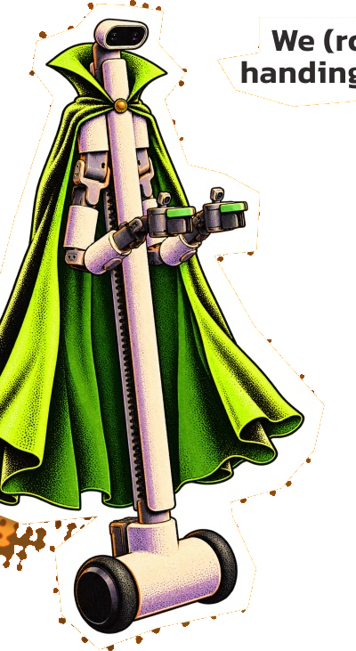
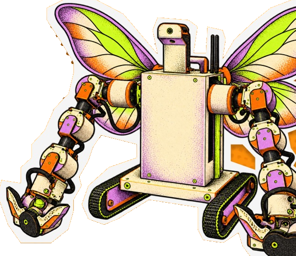

Trick or Treat
with
ROBOTS!
When:
Oct. 31 @ 5–8 PMHalloween night
Where:
374 Connecticut AvePotrero Hill, San Francisco. Open in Maps
We (robots) are handing out candy!

Come meet us!

How it works
- Walk up to a robotThey're hard to miss. Costumes encouraged.
- Say "trick or treat"Loud and clear. The robots are friendly but a little hard of hearing.
- Hold out your bagThe robot hands over the candy. Say thanks, it likes that.
Good to know
- Bring a bag or bucket for your candy.
- Kids should come with a grown-up. Grown-ups can have candy too.
- Just show up any time between 5 and 8 pm.
Free. No sign-up. Everyone welcome.